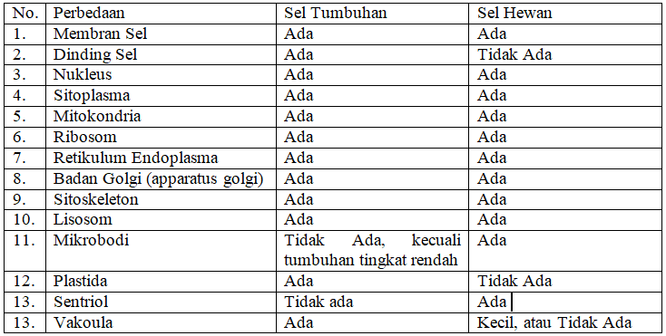

silahkan di tonton dahulu ya!
Video 5 Sel Hewan dan Sel Tumbuhan
Sel hewan tidak memiliki dinding sel, tidak memiliki plastida, dan bentuk tidak tetap seperti sel tumbuhan. Vakuola pada sel hewan kecil atau tidak tampak. Hewan-hewan Suniselular biasanya memiliki vakuola. Ada dua tipe vakuola sebagai berikut.
a. Vakuola kontraktil berperan dalam menjaga tekanan osmotik sitoplasma (disebut juga osmoregulator).
b. Vakuola nonkontraktil atau vakuola makanan berfungsi untuk mencerna makanan.
Sel tumbuhan tidak memiliki sentrosom dan sentriol, kecuali tumbuhan tingkat rendah. Sel hewan memiliki dua sentriol di dalam sentrosom. Saat pembelahan sel, tiap-tiap sentriol saling memisahkan diri menuju kutub yang berlawanan dan memancarkan benang-benang gelendong pembelahan yang akan menjerat kromosom.
Pada prinsipnya sel hewan mirip dengan sel tumbuhan, tetapi dalam perkembangannya sel hewan memiliki beberapa perbedaan dengan sel tumbuhan. Sel tumbuhan memiliki organel tertentu yang tidak terdapat pada sel hewan, demikian pula sebaliknya. Sel tumbuhan memiliki dinding sel, plastida, dan vakuola yang tidak dimiliki sel hewan. Sebaliknya, sel hewan memiliki sentriol yang tidak dimiliki oleh sel tumbuhan. Kita akan membahas perbedaan antara sel hewan dengan sel tumbuhan satu persatu.
Berikut perbedaan sel hewan dan sel tumbuhan.
Tabel Perbedaan Sel Hewan Dan Sel Tumbuhan
sebelum lanjut ke materi berikutnya, cobalah menjawab pertanyaan di bawah ini!
keterangan :
biru : benar
merah : salah